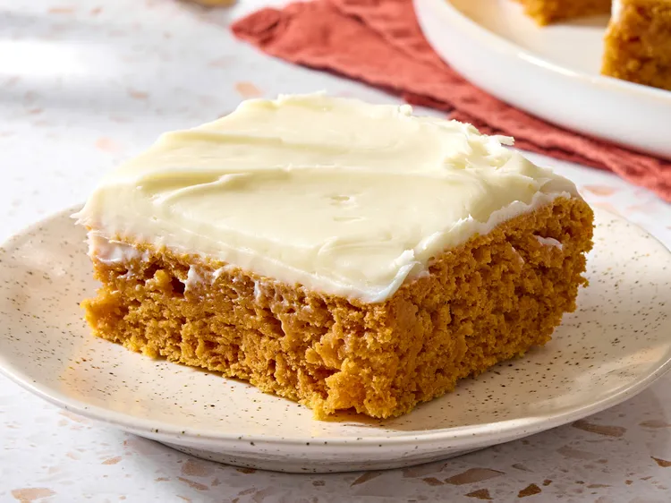

Burger

A comforting Italian-inspired baked pasta dish made with layers of rich meat sauce, creamy béchamel, tender lasagna sheets, and melted cheese. Perfect for family dinners or special occasions.
Ingredients
- 12 lasagna sheets
- 500 g ground beef
- 1 medium onion, diced
- 3 cloves garlic, minced
- 800 g canned crushed tomatoes
- 2 tbsp tomato paste
- 1 tsp dried oregano
- 1 tsp dried basil
- 1 tsp salt
- ½ tsp black pepper
- 2 tbsp olive oil
- 2 cups béchamel or white sauce
- 2 cups shredded mozzarella cheese
- ½ cup grated Parmesan cheese
Instructions
- Prepare the meat sauce: Heat olive oil in a pan over medium heat. Sauté the onion and garlic until softened.
- Add the ground beef and cook until browned. Drain excess fat if necessary.
- Stir in the crushed tomatoes, tomato paste, oregano, basil, salt, and pepper. Simmer for 20–25 minutes, stirring occasionally.
- Cook the lasagna sheets according to the package instructions. Drain and set aside.
- Assemble: Spread a thin layer of meat sauce in a baking dish. Add lasagna sheets, meat sauce, béchamel, and mozzarella. Repeat the layers until the ingredients are used.
- Finish with béchamel, mozzarella, and Parmesan on top.
- Bake at 180°C (350°F) for about 35–40 minutes, or until the cheese is golden and bubbling.
- Let the lasagna rest for 10–15 minutes before slicing and serving.